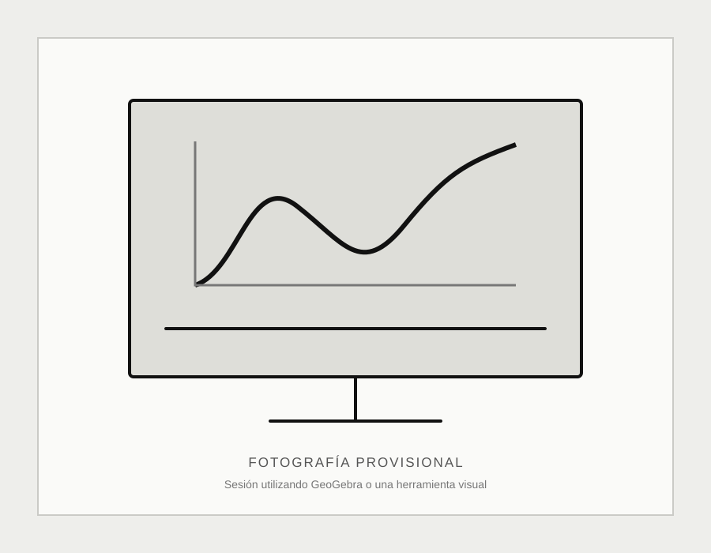

Metodología
Cómo trabajo
No todos los estudiantes presentan la misma dificultad ni necesitan la misma explicación. El proceso se adapta a la situación real de cada persona.
Siete etapas
Del objetivo a la práctica
El recorrido no es rígido: permite priorizar lo que el estudiante necesita en cada momento.
Identificar conocimientos previos.
Atender necesidades inmediatas.
Reconstruir fundamentos.
Visualizar y contextualizar.
Practicar.
Dar seguimiento.
Prioridades
Resolver primero, comprender después
Cuando existe una evaluación próxima, puede ser necesario enseñar primero un procedimiento práctico que permita reconocer y resolver cierto tipo de ejercicio. Después se reconstruye la comprensión necesaria para utilizarlo con mayor autonomía.
Una decisión práctica
Atender el presente sin perder de vista las bases
La metodología permite responder a una necesidad urgente y continuar con los conocimientos que sostienen el aprendizaje a largo plazo.

Recursos de apoyo
Tecnología como herramienta
La tecnología se utiliza para visualizar, comprobar, generar materiales y explorar ideas. No se utiliza para sustituir el razonamiento ni para hacer el trabajo del estudiante.
Resultado esperado
Confianza para enfrentar el siguiente problema
“El objetivo no es que todas las personas se emocionen al escuchar la palabra matemáticas. El objetivo es que puedan enfrentarlas con calma y pensar: está bien, es solamente un problema más.”